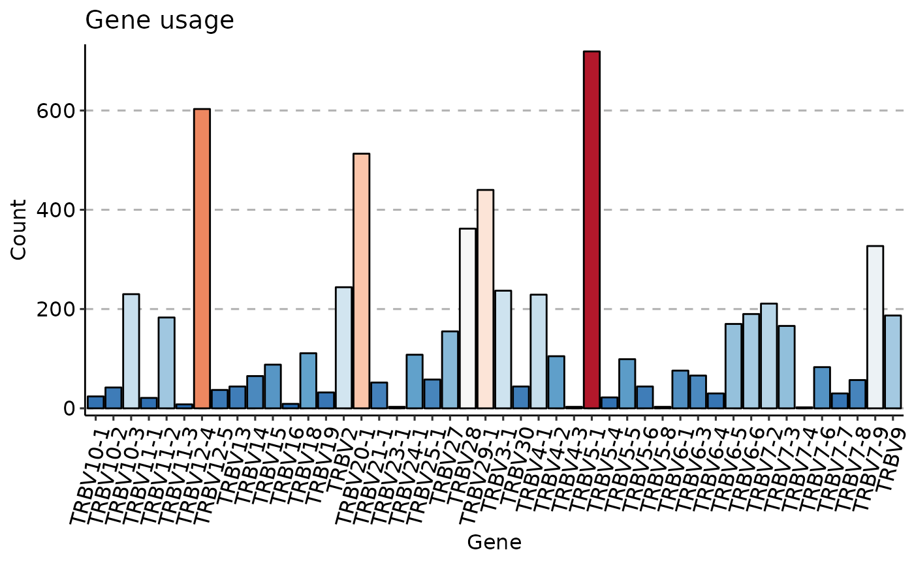
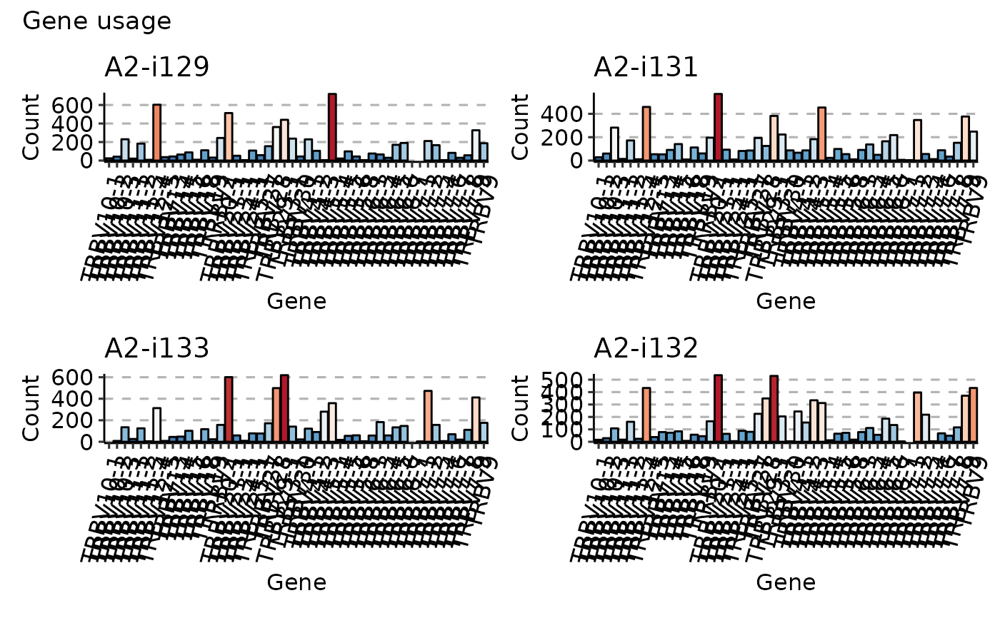

Visualisation of distributions using ggplot2-based histograms.
vis_hist( .data, .by = NA, .meta = NA, .title = "Gene usage", .ncol = NA, .points = TRUE, .test = TRUE, .coord.flip = FALSE, .grid = FALSE, .labs = c("Gene", NA), .return.grob = FALSE, .melt = TRUE, .legend = NA, .add.layer = NULL, ... )
| .data | Input matrix or data frame. |
|---|---|
| .by | Pass NA if you want to plot samples without grouping. You can pass a character vector with one or several column names from ".meta" to group your data before plotting. In this case you should provide ".meta". You can pass a character vector that exactly matches the number of samples in your data, each value should correspond to a sample's property. It will be used to group data based on the values provided. Note that in this case you should pass NA to ".meta". |
| .meta | A metadata object. An R dataframe with sample names and their properties, such as age, serostatus or hla. |
| .title | The text for the title of the plot. |
| .ncol | A number of columns to display. Provide NA (by default) if you want the function to automatically detect the optimal number of columns. |
| .points | A logical value defining whether points will be visualised or not. |
| .test | A logical vector whether statistical tests should be applied. See "Details" for more information. |
| .coord.flip | If TRUE then swap x- and y-axes. |
| .grid | If TRUE then plot separate visualisations for each sample. |
| .labs | A character vector of length two with names for x-axis and y-axis, respectively. |
| .return.grob | If TRUE then returh the gridArrange grob instead of the plot. |
| .melt | If TRUE then apply melt to the ".data" before plotting. In this case ".data" is supposed to be a data frame with the first character column reserved for names of genes and other numeric columns reserved to counts or frequencies of genes. Each numeric column should be associated with a specific repertoire sample. |
| .legend | If TRUE then plots the legend. If FALSE removes the legend from the plot. If NA automatically detects the best way to display legend. |
| .add.layer | Addditional ggplot2 layers, that added to each plot in the output plot or grid of plots. |
| ... | Is not used here. |
A ggplot2 object.
If data is grouped, then statistical tests for comparing means of groups will be performed, unless .test = FALSE is supplied.
In case there are only two groups, the Wilcoxon rank sum test (https://en.wikipedia.org/wiki/Wilcoxon_signed-rank_test) is performed
(R function wilcox.test with an argument exact = FALSE) for testing if there is a difference in mean rank values between two groups.
In case there more than two groups, the Kruskal-Wallis test (https://en.wikipedia.org/wiki/Kruskal
A significant Kruskal-Wallis test indicates that at least one sample stochastically dominates one other sample.
Adjusted for multiple comparisons P-values are plotted on the top of groups.
P-value adjusting is done using the Holm method (https://en.wikipedia.org/wiki/Holm
You can execute the command ?p.adjust in the R console to see more.
data(immdata) imm_gu <- geneUsage(immdata$data[[1]]) vis(imm_gu, .plot = "hist", .add.layer = theme(axis.text.x = element_text(angle = 75, vjust = 1)) )#>imm_gu <- geneUsage(immdata$data[1:4]) vis(imm_gu, .plot = "hist", .grid = TRUE, .add.layer = theme(axis.text.x = element_text(angle = 75, vjust = 1)) )#>#> Warning: Removed 2 rows containing missing values (position_stack).#> Warning: Removed 2 rows containing missing values (position_stack).#> Warning: Removed 1 rows containing missing values (position_stack).